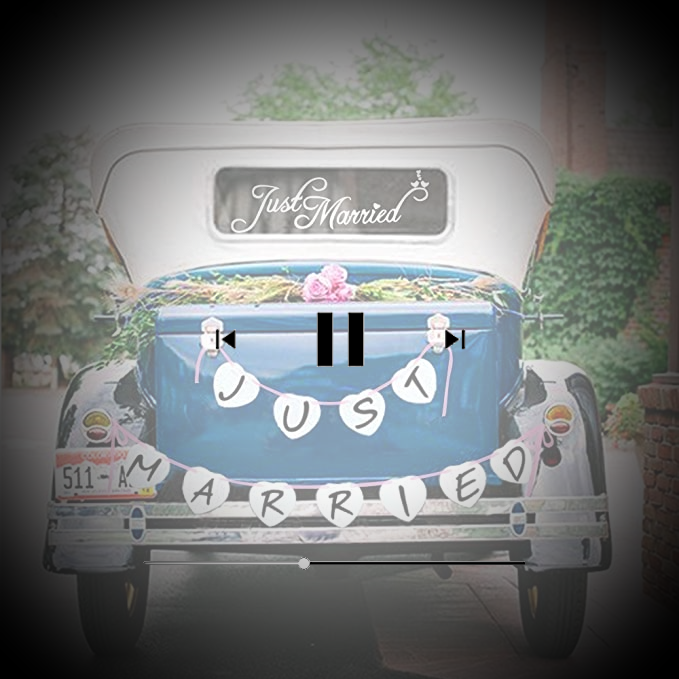

Pausa
Finalmente hemos tenido que hacer una pausa... no vamos a casarnos hasta que mejore la situación, así que id apuntando nueva fecha para el 16 de octubre de 2021!
¡Que sí! Que nos casamos!!
¡Estamos muy felices!
Y lo queremos compartir con todos vosotros.
Por eso queremos que todo esté perfecto
para ese día y no haya ningún contratiempo.
Mientras llega el gran día hemos
creado esta web para intentarlo,
esperamos que os sirva de ayuda.
Una cosa importante,
en la sección asistencia puedes confirmar
si vas o no a la boda.
Confírmanos lo antes posible por favor,
que así organizarlo todo nos será mucho más fácil.
Finalmente hemos tenido que hacer una pausa... no vamos a casarnos hasta que mejore la situación, así que id apuntando nueva fecha para el 16 de octubre de 2021!
Bueno, la ceremonia la haremos cerca de nuestra casa. En la parroquia de San Pedro Mártir de los Dominicos, en la misma carretera A1, en la vía de servicio a las 17:30.
Después nos gustaría compartir con todos vosotros una verdadera fiesta! Seguiremos en la finca Peñarrubia en San Agustín del Guadalix, hacia el kilometro 3.1 de la carretera de Colmenar
Habrá servicio de transporte entre la iglesia y la finca, así como de la finca a Madrid (indispensable preaviso).
Los horarios de los autobuses son:
| Hora | Salida | Paradas | Llegada |
|---|---|---|---|
| Salida de la iglesia | Parroquia San Pedro Martir Dominicos | - | Finca Peñarrubia |
| 01:30 | Finca Peñarrubia | Plaza Castilla y Nuevos Ministerios | Plaza Conde Valle Suchill |
| 04:30 | Finca Peñarrubia | Plaza Castilla y Nuevos Ministerios | Plaza Conde Valle Suchill |
Para los que necesiten alojamiento, nosotros os recomendamos Sercotel Gran Hotel Conde Duque ubicado en el centro de Madrid, en la plaza Conde Valle Suchill
Nos gustaría que entre todos compartieramos todas las fotos que hagamos. Más adelante os compartiremos las fotografías profesionales hechas allí, pero mientras tanto podemos darnos el gustazo de un piscolabis!
Si os apetece subir alguna foto antes de la boda, ¡sólo hacedlo! y así tendremos ya más recuerdos en los que pensar para abrir boca.
Podéis acceder al álbum compartido desde AQUÍ. También hemos pensado en un hashtag para los más instagrameros #BodorrioCrisYJesus2021
Para poder hacer este día aún más impresionante os pedimos un pequeño favor y ¡no tardaréis más de un minuto!. Necesitamos que nos confirméis vuestra asistencia aquí
¡Gracias!
Para poder hacer este día aún más impresionante os pedimos un pequeño favor y ¡no tardaréis más de un minuto!. Necesitamos que nos confirméis vuestra asistencia con el siguiente formulario.